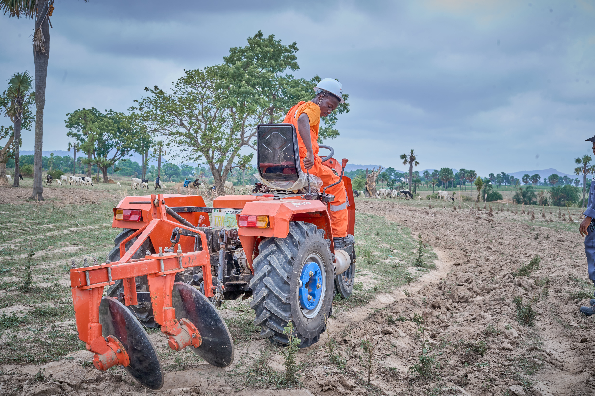
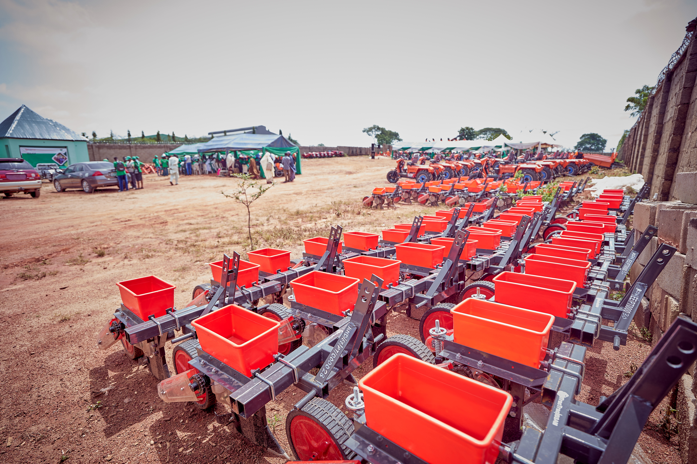

Service providers
What it really costs to keep a machine working.
Keana LGA — on fuel, repairs, idle weeks and the jobs that never get paid.
Why this matters
Buying a tractor or labour-saving devices (Threshers, knapsack sprayers, Fertiliser applicators) is out of reach for many farmers.
Even when machinery is available, it may be too far away, unavailable when the farm is ready, or difficult to find.
At the same time, equipment owners need steady demand to keep their machines productive.
TracTrac helps bring those needs together.

We help farmers find machines, and we help machines find work.
How TracTrac works
TracTrac helps connect the pieces.
Core service network
Each one depends on the others. The network is what turns scattered demand into work that actually gets done.
Demand
Delivery
01
Keep machinery available and working.
02
Need mechanisation services and request the service.
03
Bring nearby farmer demand together.
04
Take the job and deliver it on the ground.
The wider system that lets the network work at scale.
Cooperatives
Organise local mechanisation businesses.
Finance & Investors
Put capital behind machinery.
Government & Regulators
Shape the operating environment.
Development Partners
Help effective models grow.
Start with what you need

Farmers
Find mechanisation services around you without having to buy and maintain expensive equipment yourself.
Find Mechanisation
Equipment Owners
Enlist your equipment, complete verification and connect your machines to farmer demand.
Enlist Your EquipmentBooking Agents
Bring farmer demand together, connect communities to available services and earn while supporting the people around you.
Become a Booking AgentMechanisation Service Providers
Develop your skills, reach more farmers and grow a business providing mechanisation services.
Explore MSP OpportunitiesTechnology built for the work on the ground
TracTrac brings the steps around mechanisation into one connected experience.
Farmers can find equipment, measure their farms and request services. Equipment owners and agents can manage machines, demand and field activity.
01 · Find
See available tractors and equipment around you.
Search by location, equipment type, capacity and availability, and filter down to what actually fits the job.
02 · Book
Walk the boundary. Your phone maps the farm.
Accurate farm size means accurate pricing, so you can request the service now or plan ahead for when the work needs to happen.
03 · Follow
Bookings, payments and field activity in one place.
Agents can also capture information in low connectivity areas and sync it when a connection comes back, so the work is never held up.

More ways to get the work done
A farmer may need one machine for land preparation and a completely different tool later in the season.
TracTrac is being built around the work farmers need to get done, not around one type of machine.
Land preparation
Ploughing, harrowing and ridging with tractor mounted implements.
.jpeg)
Planting
Seeding and planting with matched implements.
.jpeg)
Spraying
Crop protection with smaller powered equipment.
.jpeg)
Irrigation and fertiliser application
Keeping the crop supplied through the season.
.jpeg)
Harvest and post harvest
Harvesting, threshing and soil testing services.
.jpeg)
Haulage and transport
Moving inputs to the farm and produce to market.
The people behind mechanisation
A machine is only useful when people can operate it, maintain it, organise demand and build a reliable service around it.
TracTrac invests in practical training and opportunities for young people, women and mechanisation service providers so more communities have the people needed to keep machinery working.
Explore Our Programmes
Featured programmes
ISSAM
Improving Smallholder Farmers' Access to Small Scale Agricultural Mechanisation Services
Through ISSAM, TracTrac and Mastercard Foundation are supporting young people to build businesses that bring agricultural machinery closer to farming communities.
Youth led cooperatives receive machinery alongside technical training and business support, helping them provide mechanisation services while building sustainable livelihoods.



Stories from the field
The clearest way to understand mechanisation is through the people using it — the farmers, operators and communities putting better access to work.
.jpg)
Featured story
Across Nasarawa State, our field teams spend their days with farmers, operators and service providers — asking how they get machinery today, what it costs them and what goes wrong.
Every feature in TracTrac starts in a conversation like this one.
Insights
Research, programme updates and perspectives published by our team as the work develops.
Partnership
It takes finance, skills, service networks, policy and long term investment.
TracTrac works with government, financial institutions, development partners, investors, equipment companies and agricultural organisations to strengthen the system around mechanisation.
From field delivery to national conversations, the goal is the same: make mechanisation work for more people.

Government and regulators. Commercial banks. Development finance institutions. Investors. Development partners. Equipment manufacturers. Agricultural organisations.
Beyond service delivery
TracTrac brings stakeholders together, contributes to industry and policy conversations and helps turn ideas into practical action.
Working with organisations that want mechanisation to work.


FAQ
Find answers to common questions about TracTrac Plus and how it helps connect farmers to mechanisation services.

Whether you need machinery, own equipment, work with farmers or want to invest in agricultural mechanisation, there is a place for you in the TracTrac network.
Find Mechanisation